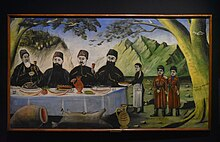

Georgia, a country nestled in the Caucasus region of Eurasia, is rich in unique traditions that have been passed down through generations. One such tradition that reflects the spirit of the Georgian people is the concept of a "supras" or traditional feasts. These gatherings are not just about food and drink; they are an integral part of Georgian social life, where customs, hospitality, and storytelling come together in a celebration of community and culture.

At the heart of the supra is the role of the tamada (toastmaster), who leads the feast with a series of toasts, each carrying deep meaning and symbolic importance. The tamada is not just a host, but a master of ceremony, responsible for guiding the conversation and ensuring the flow of toasts. These toasts are often long and eloquent, touching on themes such as love, friendship, family, and country, with each toast followed by a drink of wine, a beverage that plays an important role in Georgian tradition.
Wine, in fact, is a symbol of Georgian culture. The country is one of the oldest wine-producing regions in the world, with evidence of winemaking dating back over 8,000 years. At a supra, wine is not just a drink; it’s a symbol of life, good fortune, and connection with the land. A toast with wine is often accompanied by the tradition of "khaishi"—drinking from a shared vessel as a sign of unity.